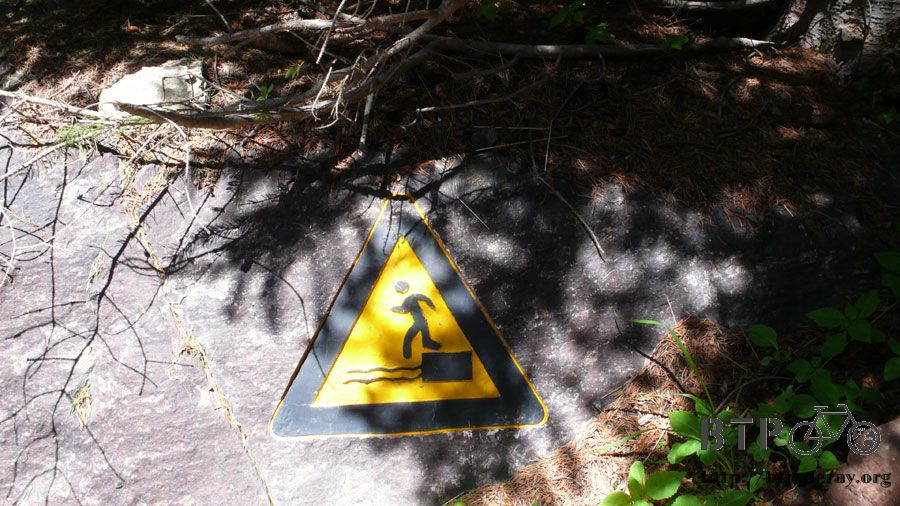
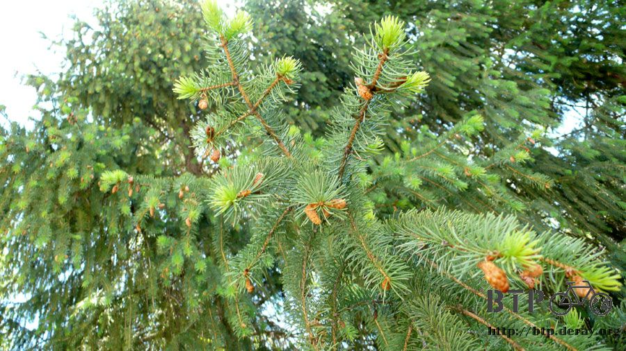
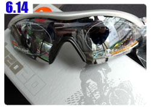

天山‧天池
算準時間起床，先喝兩大杯水，這樣今天可以省下買飲料的錢，多帶幾張記憶卡，今天要去的地方會謀殺很多容量。
離開招待所後買了一份蔥花餅當早餐，沿著越來越熟悉的烏魯木齊市區道路往人民公園的方向走去。

九點半整的時候我出現在昨天問價錢的旅行社攤位，付過一百二十元之後，社裡的員工交代說，
『要是等等在車上有人問你參加的價錢是多少，絕對不要說出一百二十元這個數字。』
固定的旅遊路線、相同的遊覽車、同樣的導遊和午餐，但是不同地方上車的客人，價錢則是完全不一樣的。
像我自己走到公園上車，這裡是發車的總站，價錢是最便宜的，一百二十元扣除門票九十元，再扣除午餐十五元，
還有旅遊專車接送單程距離就要一百二十幾公里的烏市<->天池路線，這個價錢除了超便宜之外沒有別的形容詞。
但是其他客人的價錢大多在一百八十元起跳，這是旅行社同行報出的公定價，星級酒店接的客人，則從兩百五十元起跳，最高到三百元都有。
雖然很便宜，但是我不喜歡參加旅行團的原因，今天一口氣就全部浮現了。
付過錢之後，我得從本來說會發車的公園南門，走半個小時穿越公園到北門去，然後在車上枯坐半個小時，因為有散客昨天繳了錢還沒上車。
等散客接完了，發車之後開始在市區繞行幾個大酒店，接零星的客人，每一間酒店停留的時間都是將近二十分鐘。
時間就這麼在遊覽車上一分一秒的浪費掉了，等待需要耐性，但為了其他人的慢吞吞而影響自己的旅行計畫則令人生氣。
真想大喊『嘿～你們這些多繳錢的笨蛋，快一點好不好，都已經要中午了耶！什麼時候才出發呀？』
昨天旅行社跟我說的，早上九點半出發，晚上七點半回到烏市，很自然的就給我可以在天池玩一整天的想法。
但事實完全不是這樣，等全部的客人都接完，車上連一個座位都沒有之後，司機才滿意的離開烏市開往高速公路，這時候已經中午了。
路上導遊就會介紹一些人文知識，像是伊斯蘭教徒不吃豬肉，所以很忌諱提到豬這個字。
教我們說可以稱之為『大耳朵的羊』、『短腿的牛』，新疆很多采多姿，但是可以用一個字來形容它，就是『疆』。
『疆』這個字經過解釋之後，原來完全是新疆地理的象形文字。
左邊的『弓』字，代表的新疆的邊界，佔整個中國的四分之一，和八個國家接壤。
左下的『土』字，說明了新疆是全中國最大的省分，土地遼闊，民族眾多，共有四十七個民族在新疆生活。
右邊的三個『一』字，由北到南則代表著新疆的三座山脈，阿爾泰山、天山和昆崙山。
阿爾泰山礦產豐富，也有金礦，天山的雪水和美景舉世聞名，崑崙山的和闐玉則是明年奧運獎牌的構成元素之一。
而右邊的兩個『田』字，則代表著準噶爾盆地和塔里木盆地，也就是俗稱的北疆和南疆。
到天池的車程需要一個半小時，中間又停留在賣藥材的店家，想也知道是跟旅行社合作的商家。

一車一車的把客人載到這裡來消費，這就是旅行團，比較過份的還有整團如果消費不到一定金額，是不開車繼續往下走的。
商家就是賣一些天山雪蓮、佛手人蔘等珍貴的藥材，都是以公克為單位計價賣出的，店員穿著白袍看起來比較有醫師的專業感。
當整車的團員們在購物的時候後，我則在外頭和小雞玩，半小時之後，終於又能重新開車了。
整團進出天池，是沒有門票可以拿在手上的，少收集了一張景點的門票，一下車之後就是豪華的遊客服務中心。
天山、天池是五個A級的國家景區，也是這一路上玩到現在最多A級的地方。
這一路搭車過來，我的屁股都已經要爛掉了，正想好好的爬上山看景色的時候，
其他的團員則各自繳了錢準備要搭區間車到山頂天池。拜託，這邊是天山耶，大老遠跑到這邊來不欣賞一下美景，整天在搭車有什麼意思？
我跟導遊說我不搭區間車，我想走步道上去，我等等在上面跟妳碰頭，然後妳再帶我去餐廳吃飯。
到達天山已經是下午將近兩點，下午四點半則要從這邊發車離開，所以只能待短短的兩個半小時。
一整個早上花在搭車的時間都遠不只這兩個半小時，跟我想像中的玩一整天落差實在太大，但是沒辦法，趕緊把握每一分鐘吧。
然後就開始爬吧，從目前的海拔要爬到天池的海拔，大概相當於爬一座台北101的高度。
全部都是階梯，所以可以爬得非常過癮，以前我發瘋的去參加登高大賽爬過新光三越，所以爬這個其實還不算太累。
一進入步道就是一個大水車，和人工造景的瀑布，這個瀑布是給沒辦法自己爬到飛龍瀑布的人拍照用的。
階梯不是一口氣都直直往上走，前半段是上上下下起伏的階梯，好不容易爬高了一點，又一口氣降低高度。
階梯沿著涓涓溪流而建，溪流裡的水是從天池流下來的，而天池裡的水則是天山的雪水融化而來的。
烏魯木齊所有的水資源都是依靠天池裡的雪水，天池並不是被隕石砸出來的，它是一個很大的天然湖泊。
往天池的步道上都是很漂亮的景色，回頭看看遊客中心的方向，停了那麼多的遊覽車，但是所有人都選擇搭區間車上去，真是太可惜了。
這樣也好，自己一個人爬步道清閒的多，又是另一個被包下來，讓我獨享的旅遊時光。
步道裡除了腳下踩的步道、防止遊客摔落的護欄和幾座涼亭、垃圾桶之外，完全沒有人工的東西來破壞景色。
就連一些告示牌，也不用豎立一個牌子的方式，而是將圖案刻在石頭上面，將當的有趣。
這些圖案有小心墜落、小心滑倒、落石注意、請勿戲水等等，畫的都很生動，看了就會發出會心一笑。
很久沒爬這麼多的樓梯，一開始有點不習慣，慢慢的調整呼吸，就會漸入佳境了。
階梯旁邊就是溪流，光聽那水勢的聲音就很難不去注意它的存在，雖然告示牌說戲水是很危險的。

但是看到這麼清澈透明的溪水，不離開步道，走下山谷去玩一下水實在對不起自己。
山谷間有很多石頭可以當踏板，爬上爬下不算太困難，河岸的石頭則長滿青苔，相當的滑，這個要小心踩好。
在溪邊用清涼的水洗把臉，整個人舒暢起來，捲起袖子，恢復精神，繼續往上爬吧。
天山這裡的植物實在太多了，不僅綠意盎然，更讓這條步道增添了許多色彩，有些結實纍纍，有些則早已落了滿地的果實。

這條登山步道建設的方式很神奇，依種種跡象看來，並沒有因為建設這條步道而砍掉一顆樹，只要樹擋住步道，步道就會繞路，
要是繞不過去的話，沒關係，就在步道上面挖洞，讓樹繼續在原地生長，路也能開的成。

山谷間也有平坦的草原，生長著不高的小草和遍地的蒲公英，風景很漂亮，所以也有看到帳棚搭在這邊露營。
走到看見告示牌的時候，這裡的路開始變得複雜，前面一路上都是直線，不會迷路，這裡之後就是迷宮了。
過了一座吊橋，然後要攀爬蓋在岩壁上的蜿蜒步道，光是用看的腳就很軟，同時也很心醉從上面往下鳥瞰的景色會有多美麗？
一路上都會看到許許多多的小瀑布，它們是從山脈的岩壁中冒出來的。
所以在這座山裡面的水脈線想必錯綜複雜而且多的驚人。
倒下的樹木就自然的在原地腐爛，然後孕育出新的生命，對於大自然，人類在這裡干預的不多。
登上了岩壁之後，路線就和剛剛不太一樣了，變成走山林小徑，在這裡遇見了進入步道之後的第一個人，正在做打掃的工作。
天山區域民族最多的是哈薩克族，哈薩克族在這邊都住在帳篷裡，以畜牧維生。
也有部分的人會在天池景區工作，不是像這樣做清潔的，那就是穿著西裝筆挺的服務遊客。
進入山道之後就迷路了，岔路和小道一條接著一條，到底哪邊才能到天池，哪邊又才能看到瀑布呢？
看到有一個小販在這邊擺攤，跑過去問一下路該怎麼走？
店員很親切的跟我說一條可以看到瀑布也能登上天池的路，當然職業性的他會推銷一些商品。
我說我沒錢買，不然我拍張照片幫你打廣告宣傳一下好了，他一定以為我在唬爛他，可是我真的有在幫你宣傳喔～
從店員說的路走，又跑下了山道，然後重新聽到大洪水般的聲響，沿著溪流往上走，就是水勢驚人的飛龍瀑布了。
這個瀑布不是每天都看的到，要看天池那邊有沒有放水，有的話才能欣賞到這麼美麗的景色。
瀑布飛濺而下，水花紛飛，在陽光中反射變成美麗的彩虹，今天是一百萬美金也買不到的好天氣。
白雲朵朵、晴空高照、氣溫宜人、微風徐徐，瀑布不高，宣洩而下的水讓它看起來更加的宏偉。
離開瀑布再往上爬一小段路，經過這一條最後的階梯，遼闊的山勢和驚人的湖景就展開了。
為了可以看到這美景，爬了一個半小時的登山步道真是無比的直得，美的令人忘了呼吸，屏息看著這天然的藝術品。
小金是導遊的名字，之前還在車上的時候她就介紹說『天池很小，沒什麼可以看的，你們到了就知道了。』
小金妳一定是瘋了！這麼大的湖妳居然說它很小？
湖邊有各式各樣的遊艇、汽艇、畫舫，可以搭船遊湖，不同的船價格也就不一樣。
湖邊種植著很多奇怪的植物，一根一根咖啡色的，頂端還會開花，看到這湖景的時候，我腦海裡面第一個念頭居然是
『這根本就是真人版的上古卷軸四呀，我要去湖邊採草藥練技能。』
景色太美，美的不像是真實的，而是我掉進了電玩的世界，那種只有虛幻才有辦法構建出來的美麗世界。
我來跟小金約好在這邊碰頭，她要帶我去吃午餐，但是繞了一圈沒看到她，因為我已經比相約的時間晚了半個多小時才爬上天池。
我就問工作人員某一間餐廳的名字在哪裡，好加在我剛剛有問吃飯的地方叫什麼名字，然後自己跑過去吃午餐。
午餐是風味餐。有兩種可以選擇，拌麵或是抓飯，都是無限量供應的，我點了抓飯，配著也是無限量供應的茶水。
早上只吃了蔥油餅，一路上又沒吃沒喝，剛剛又爬了一座101，真的是又餓又渴又累。
吃完一盤再裝滿一盤，茶水一杯接著一杯，雖然稱不上多美味，但肚子餓的時候是什麼都好吃的。
這是載遊客到湖區的小車子，跟從底下上來的區間車不一樣喔。
就算搭區間車也只會載到下面的停車場，還要自己走十分鐘斜坡上來，如果連這十分鐘都懶得走的話，
那還可以在花錢繼續搭車，完成一路上都搭車子上天池的懶人舉動。
很快的吃完飯，重新走回湖區，湖區規劃的很不錯，商店街、餐廳距離它至少都有三百公尺以上的距離。
湖水的清潔不會受到商家做生意的影響，雖然遊湖的船隻一艘接著一艘的開，但是湖面沒有飄浮垃圾和油汙。
照片中看起來都沒什麼人，其實完全不是這麼一回事，遊客的數量超級多的，我都會很技巧性的取景，或是很有耐心的等大家走開才拍照。
像這一座天池的立碑，在這裡排隊等著拍照的遊客隨時都有幾百人，好不容易才讓我拍到一張這麼清爽無人跡的照片。
以一個遊客數量這麼多的景點，能夠維持成這樣的水準真是要大大的拍手鼓勵，回到湖區之後，小金終於出現了。
『你可出現了，我在這邊等你等了一個多小時呀。』真是可憐的小金，而我這個時候已經吃飽飯了。
因為我出現了，所以她終於不用繼續在這裡傻等，導遊真不是人作的工作。
什麼『跟著客人一起玩，一定很開心吧。』這種事情根本就是幻想。
形形色色的客人那麼多，光是要照顧好每一個人足以讓人神經衰弱了，旅行社的規定又多，每次她都想說帶完這一團就再也不要帶了。
小金本來想幫我拍照，我說我不喜歡拍照，然後她說這是她遇到第二個不喜歡拍照的人。
手勢就比了一個二，剛好被我拍下來變成勝利的手勢。

因為她是導遊，新疆所有的景點，從一日遊的，到四日遊的，所有地方她都去過了，問她最喜歡帶哪一條線的團？
『天池吧，可以下班回家早一點。』
已經不是因為哪邊的景色漂亮而喜歡帶團，單純的是因為可以回家早一點~_~
附帶一提，她是完全沒有客人會給小費的，商家跟餐廳也不會給她回扣，之前有客人發現每個人玩的價錢不一樣，
三個老太太比其他人多交四十元，這錢也不是落入導遊的口袋，但是她一路上就被這三個老太太折磨的想要跳車逃亡。
在湖邊泡泡腳，雪水溶化而成的湖水真的是好冰好冰呀>"<
比起之前在黃河泡的水還要更凍人，看到我脫鞋子的時候，小金就阻止我說『這水很冰，會凍壞的。』
腳一沾到水，就冷的讓我瑟縮了回來，現在用冷水甚至有點冰的水洗澡都無所謂的我，還是被這雪水給冰到了。
坐在湖邊階梯，淺淺的泡一下湖水，即使水這麼冷，裡頭還是有冷水魚，生命真是不可思議呀。
在冬天的時候，這邊的溫度是零下三十度，整個湖面都會結冰，這裡就成了高山滑冰場。
這麼大的湖結成冰的樣子，在配上周圍的山脈全都附上一層厚厚的白雪，那樣的景色肯定叫人一輩子難忘。
湖岸邊有哈薩克族在販售民族衣物，顏色相當的華麗，上面的飾品也很多，在這後頭的是一顆千年榆樹，
傳說是很久以前王母娘娘為了鎮壓湖裡面有作亂的水怪，就從天上丟下一根自己的髮簪，從此水怪就不敢再作亂，
而這根髮簪就在湖邊長成了一顆榆樹，至今已有千年，樹上被人繫滿了紅絲帶，湖裡的水怪則依舊隱匿著。
這個是賣售船票的小木屋，湖邊真的很難看到有商業化的建築物，相當令人欽佩的管理方式，連商店都是在幾百公尺外的地方才有。
船票的價格從三十五元到七十元不等，因為時間和荷包的關係所以就沒有搭。
這裡是命名為聖水祭壇的平台，磚瓦交錯的顏色很漂亮。
換一條路走下山，這邊就是搭車上來的遊客會經過的地方，路很大條，跟剛剛的步道是截然不同的。
過了大馬路就是餐飲和商店街，有些招牌很好笑，能夠成功的吸引客人注意力的，除了香味之外，就是招牌了。
下山的時候不走步道，也不搭區間車，因為有別的選擇，搭纜車，纜車門票是二十元，這邊的員工都是穿西裝打領帶，看起來跟特務一樣。
從這麼高的地方搭纜車下去很過癮，雖然是走直線，但是也要搭個二十分鐘才會到底下。
纜車的顏色五顏六色的很漂亮，增添了山谷中的妝彩。
我搭的時候，纜車的乘坐率很低，每二十輛纜車可能還坐不到一個人，從高空往下看，真有點像是在搭雲霄飛車，
不同的是纜車的速度很慢很平穩，可以悠哉的度過這二十分鐘的時光。
因為高度落差太大，可能為了安全起見，所以纜車分兩段斜坡往下，中間會經過一小段平原，底下蜿蜒的馬路就是給區間車走的路。
旁邊的山裡面則是我爬上來的步道，但是從這邊則看不到步道的路線，被高聳的樹木給遮蔽住了。
回頭看搭乘過來的路，整齊的纜車不間斷的移動，相較於區間車，搭纜車也算是無汙染、無廢氣排放的環保交通工具吧。
如果有機會到天池玩的話，不要太懶惰，天山也是很漂亮的，體力許可的話請走步道上山，
大概只要走一到一個半小時就可以到，路上的景色會讓你回味一輩子都還意猶未盡的。

而從天池下山的時候，就搭纜車下去吧，從高空鳥瞰天山的景色也是很漂亮的呢！
從纜車上看天池流下來的溪水，跟剛才自己在溪邊看到的樣子很不一樣，有一種衛星空拍圖的感覺。
這裡有很多哈薩克的牧民，他們都騎著馬，放牧為數眾多的牛群。

他們常常都會把牛群趕到馬路上走，然後汽車經過的時候就對這些牛群大鳴喇叭，生性膽小的牛群就緊張的想從馬路邊跳下去。
離開纜車之後，我很準時的在四點還不到半的時候回到遊覽車，在悶熱沒開冷氣的車廂裡面繼續等其他的遊客。
有的去上廁所、有的買飲料、有的還在挑紀念品，就是這樣！我為什麼要為了一大堆笨蛋傻傻的在這邊等。
悶熱的車廂讓我的頭有點痛，回程的路上則陷入很不好睡的昏睡，勉勉強強稍微瞇了一下，醒來的時候經重新進入烏市。
但是並不是把我們載回本來的地方，而是又載去另一個和旅行社合作的和闐玉商家。
當其他客人繼續購物的時候，我跑出來買了兩根冰棒，看來不在這邊耗掉一個小時，其他客人是不會滿意的。
這就是所謂的九點半出發，七點半結束的旅行團，這十個小時裡面，
扣除三小時的來回車程、兩小時的等待、兩小時的購物行程，所剩下的就是不到三個小時的天池之旅。
問了賣冰棒的小販，從這邊離電腦城近嗎？可以的話我想走回去，但是果然還要遠的很，這裡不知道是烏市的什麼地方？
無窮的枯等是很無聊的，所以我閒逛街邊的小販吃晚餐，這個我吃了很多次都不知道名字的鹽酥雞，原來叫做『麻辣串』。
但是味道很不錯呀，不怎麼辣說，那些香料的味道真是比台灣鹽酥雞只有胡椒鹽要美味的多。
慢條斯理的吃晚餐，看著路上的行人以及街邊的小販叫賣。
吃完後回到遊覽車那邊，我的老天爺，所有人都還在裡面逛，本來以為只要再等一下，起碼車子可以把我載回公園那裡。
可是連這最後的猜想我都猜錯了，回程只停一站，一間最大的酒店，然後所有客人看是要搭公交還是搭計程車，就在這邊解散吧。
居然不是從哪裡上車，就把你載到哪裡下車？
問了一下小金這邊是哪裡？我該怎麼走回去呢？
下車的地方距離電腦城走路要將近兩個小時，目前位於烏市的很北邊，路上還會經過沙依巴克區。
反正我還蠻喜歡走路的，先買一個超大的烤餅當點心，一路上慢慢吃，剛烤出爐的溫度和口感真是太好吃了。
因為北區我還沒來過，所以往回走的路上正好就是城市觀光，北區相較於南區比較沒那麼商業化，但還是很熱鬧。
好久不見的電動玩具店，瑪莉歐大叔。
這一動就是沙依巴克政府大樓，有點肅穆威嚴門口有持槍警衛站哨，還是不要停留太久比較好。
還有經過像是公園結合市場的紅十月花園。

等我走回人民公園南門的時候，超級大的烤餅正好吃完，早上那個小姐還在顧旅行社，過去抱怨一下車子把我丟在很遠的地方，
沒有載回出發地點，讓我自己走回來，順便又問了去南山一日遊的價錢是多少？
居然只要五十元！又是門票含午餐含車資含導遊的費用。
早上十點半出發，晚上六點半回烏市， 但是經歷了今天的行程之後，我想能夠在南山牧場玩的時間不會超過三個小時吧~_~
為了慶祝自己真的從那麼遠的地方走回來，就買了一公斤的荔枝當獎勵，試吃之後真是香甜的好水果。
新疆是個好地方，不論生產什麼東西什麼都好吃。
回到旅館已經累趴了，下午爬了天山，晚上還從北到南走了整個烏市。
記憶卡拍滿了2G的照片，閉上眼睛就是美麗的天池，嘴巴吃著香甜的荔枝，我喜歡今天。

繼續閱讀：6.14 失而復得

中國-人民幣－ 1：4.3 台幣
6.13 |
總計：176元 |
天山天池一日遊120元、纜車20元、冰棒兩隻1元、烤餅1元、荔枝10元、住店20元、晚餐麻辣串4元 |
|